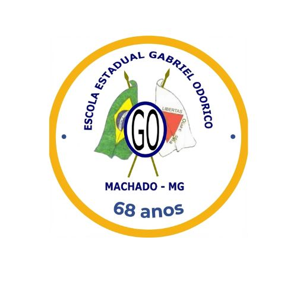

Escola Estadual Gabriel Odorico Machado: Educação e Comunidade
Nossa História
A Escola Estadual Gabriel Odorico Machado foi fundada em 1961, na cidade de Bom Despacho, em Minas Gerais. A escola tem uma longa trajetória, contribuindo para a educação da região ao longo das décadas, formando diversas gerações de estudantes. A escolha do nome, "Gabriel Odorico Machado", como é de costume em muitas escolas, pode ter uma relação com a história local ou com uma figura importante para a comunidade.

Ações e Calendário da Escola
Ação
Descrição
Carregando dados da planilha...
Nosso Impacto na Comunidade: A Tradição da Congada
A participação da Escola Estadual Gabriel Odorico e de outras escolas com o Terno Mirim traz benefícios diretos para os estudantes e o ambiente de ensino, unindo a educação formal à rica cultura afro-brasileira local.
Sociocultural e de Identidade
Preservação da Cultura Afro-Brasileira: A Congada é um ato de resistência cultural, valorizando a história e a memória do povo negro na região.
Fortalecimento da Identidade Local: A celebração de São Benedito e a Congada criam um sentimento de pertencimento forte entre os moradores e reforça os laços comunitários.
Devoção e Fé: Reforça o forte componente religioso e a devoção a São Benedito, passando a fé de geração em geração.
Educacional (Congada Mirim)
Educação Antirracista: A escola trabalha ativamente contra o preconceito e a desvalorização da cultura negra ao incorporar as raízes da Congada.
Valorização da Memória: Os alunos aprendem sobre o passado escravista da região e o papel fundamental dos afrodescendentes na formação cultural de Machado.
Formação Integral: A prática da Congada (dança, canto, toque) desenvolve as potencialidades artísticas e cognitivas dos estudantes, integrando o currículo à cultura popular.
Perpetuação e Renovação
Garantia da Continuidade: Os Ternos Mirins da Escola são cruciais para a perpetuação da tradição, garantindo que os ritos, toques e cantos sejam aprendidos pelas novas gerações.
Engajamento Comunitário: O envolvimento da escola mobiliza alunos, pais, professores e a Associação dos Congadeiros, unindo diferentes esferas da comunidade em torno do objetivo cultural.
Como entrar em contato com a Escola
Para informações, dúvidas ou contato com a secretaria, ligue diretamente para a escola. Estamos prontos para atender você.
Nossa Localização
A escola está localizada em Machado, Minas Gerais.
Endereço: Av. Santa Cruz, 315 - Centro, Machado - MG, 37750-000.